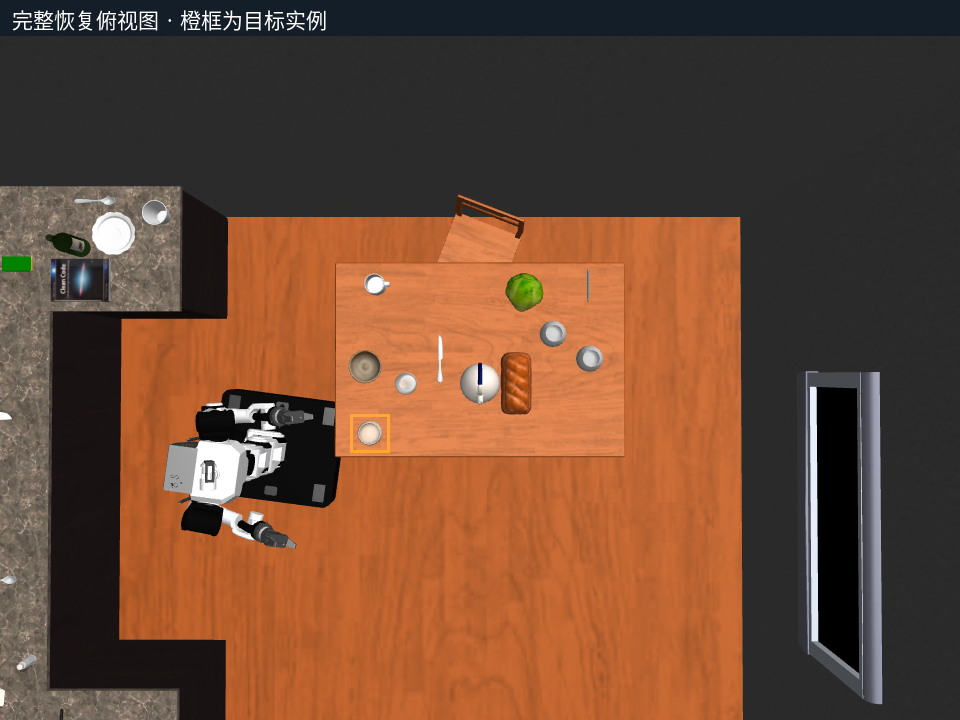
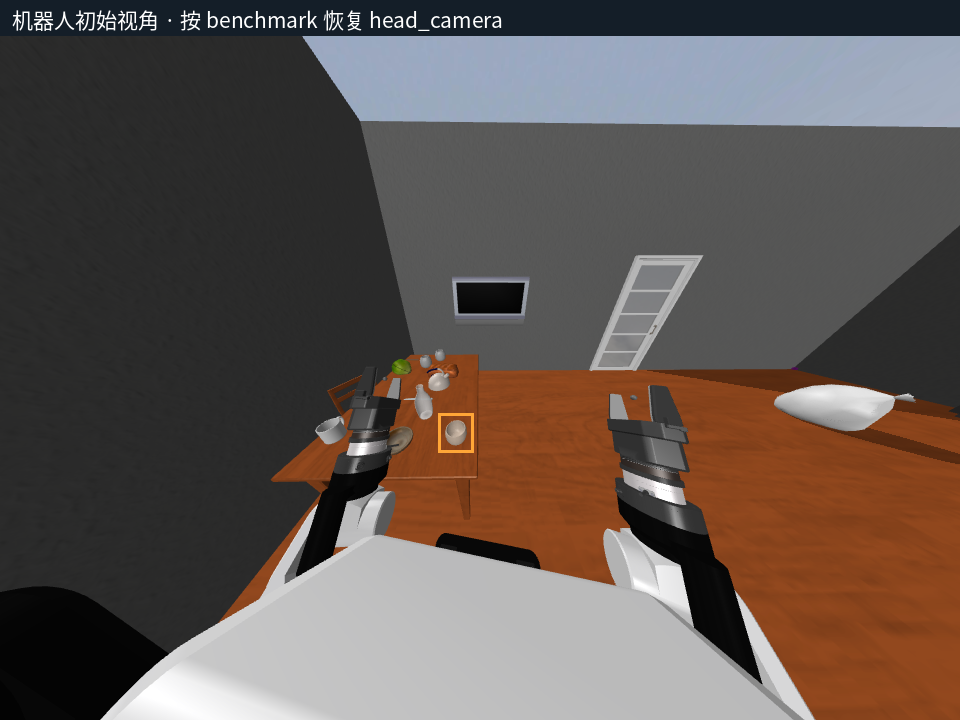
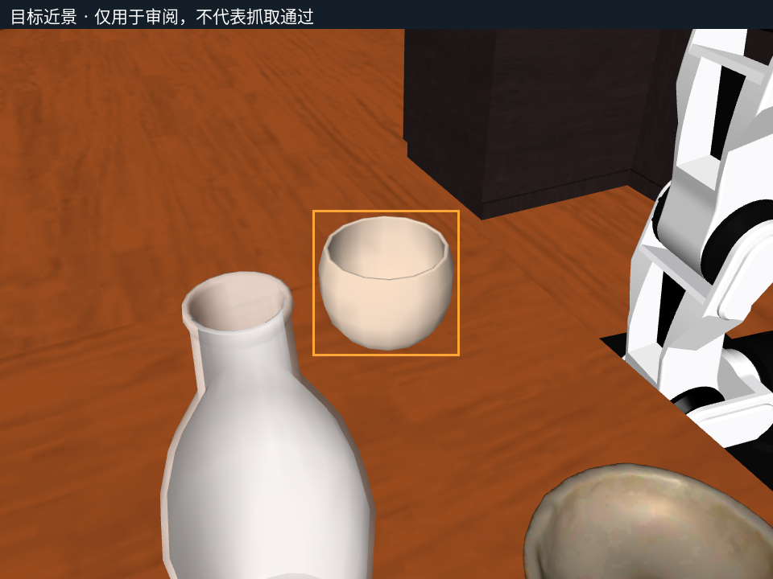
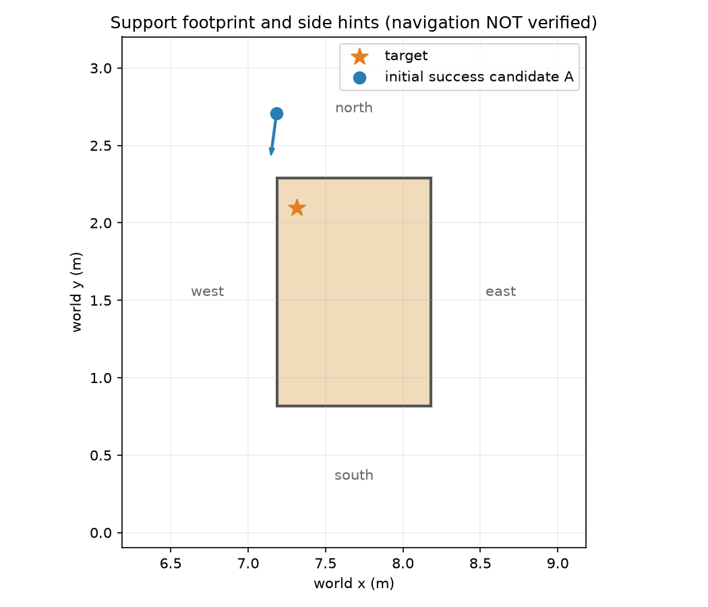

{
"status": "advisory_only",
"actor": "agent",
"may_approve": false,
"review_packet_sha256": "fc873bbf5d0e33ff619366a41579a57a7cb064b896ec0af8842913f647e57c1e",
"created_at_utc": "2026-10-01T13:36:00.488599+00:00",
"advice": {
"target_assessment": {
"asset_id": "Cup_30",
"target_name": "cup_ff2c6ab62ccb690220c97cdcfeb658c5_1_0_2",
"identity_visibility": "目标被橙框标注；在初始机器人视角、俯视图和近景中均可见。可见像素记录分别为435、486和22853。",
"pose_and_support": "恢复后的目标位姿为[7.313459458748234, 2.0988113404423916, 0.8012844308118927, -0.5000005615720113, -0.49999938835306174, 0.49999771420421835, 0.500002335859338]。1秒后诊断显示bearing_support_contact为true，静止z约为0.8012843173；这支持其当前由餐桌承托的场景恢复事实。",
"grasp_status": "未验证抓取。诊断明确标记not_grasp_success为true，不能据此推断任何末端执行器已接触、可达或能够稳定抓取。",
"local_geometry": "目标位于餐桌AABB范围内但靠近世界坐标的西北侧：餐桌x范围约为[7.1866, 8.1811]、y范围约为[0.8154, 2.2881]，目标距西侧边界约0.127、距北侧边界约0.189。近景显示其附近存在较大的白色容器及其他餐具/器皿；精确间隙、碰撞裕量和目标自身尺寸未知。",
"uncertainties": [
"未知杯子的精确碰撞网格、口沿/把手几何及可抓取区域。",
"未知周围物体与杯子之间的实际三维净空。",
"未知机器人手臂关节限位、逆运动学解、碰撞检测结果和夹爪闭合可行性。"
]
},
"tabletop_assessment": {
"support_parent": "diningtable_f113cf7f8367e89f709b53cbee1a1c05_1_0_2",
"support_category": "DiningTable",
"support_AABB_center": [
7.6838642978074185,
1.5517399999999997,
0.37516905
],
"support_AABB_size": [
0.9944734043851629,
1.4727279999999998,
0.7503361
],
"restoration_status": "all_object_poses_restored为true，已恢复对象数为35，另有3个新增对象。该信息仅说明场景状态恢复，不构成导航、避障、接近或抓取成功证明。",
"surface_assessment": "目标的z高度略高于餐桌AABB顶部估计值（约0.7503），且支持接触诊断为true，符合杯子放置于桌面的已恢复事实。目标位于桌面西北近边缘区域，取放时可能缺少部分侧向操作裕量；是否足以安全操作未知。",
"clutter_assessment": "俯视图与机器人视图均显示桌面上有多个器皿、食物/容器及餐具。目标附近可见大型白色容器，桌面其他区域也有物品。具体物体高度、可移动性、碰撞体和净空未知。"
},
"side_recommendations": {
"north": {
"recommendation": "作为优先审阅方向之一，但仅为未验证接近建议。",
"reason": "目标位于餐桌北侧边缘附近，机器人初始基座也位于目标以北约0.61个世界y单位处，表观上不必绕过整张桌面。风险是北侧边缘距离目标约0.189，末端从北侧进入时的桌沿、目标近边缘位置及局部物体干涉均未验证。"
},
"south": {
"recommendation": "不建议作为首选；仅可作为需要进一步规划时的未验证备选。",
"reason": "从南侧接近通常需要跨越或绕行至餐桌对侧，且桌面中央和南侧可见多个物品。该路径可能增加基座绕行和手臂越过桌面的需求，但实际通道、可达性和碰撞情况未知。"
},
"east": {
"recommendation": "不建议作为首选；仅为未验证备选。",
"reason": "目标位于桌面西侧附近，从东侧操作需要横跨较大桌面宽度。俯视图显示桌面中部与东部存在多个物品，可能造成末端路径遮挡或碰撞风险；是否存在无碰撞通道未知。"
},
"west": {
"recommendation": "谨慎考虑，不建议优先于北侧；仅为未验证建议。",
"reason": "目标距餐桌西边缘约0.127，理论上可从临近侧接近，但其西侧在图中靠近机器人初始位置、餐桌边缘以及相邻家具/区域。近边缘布局可能限制机器人基座和手臂的摆放空间，具体可通行宽度未知。"
}
},
"detour_risks": [
{
"risk": "餐桌周围局部通道受限",
"detail": "机器人初始位置贴近餐桌西北区域；图像中西侧邻接深色家具/墙体区域，北侧也有桌椅或其他家具。它们的精确碰撞边界、走廊宽度及可绕行空间未知。"
},
{
"risk": "桌面杂物干涉",
"detail": "目标周边及桌面中部存在容器、餐具和其他物体。任何跨桌或横向末端绕行都可能遇到未量化的碰撞或遮挡。"
},
{
"risk": "目标近桌边",
"detail": "目标靠近餐桌西北边缘。若接近方向、夹爪姿态或接触过程控制不当，存在碰触桌沿或使目标靠近边缘失稳的未验证风险。"
},
{
"risk": "感知与执行状态不等价",
"detail": "目标在多视角中可见且场景已恢复，但视觉可见性不证明机器人导航可行、手臂可达、夹爪可闭合或抓取稳定。"
}
],
"recommendation": "review",
"human_questions": [
"是否允许优先评估机器人当前北侧位置附近的局部接近，而不是要求绕行至其他桌侧？",
"是否有杯子尺寸、碰撞体、允许抓取方式或夹爪接触限制的额外信息？当前未知。",
"是否可提供餐桌周边家具、椅子及墙体的导航碰撞图或可通行宽度？当前未知。",
"是否需要避免接触或移动目标邻近的大型白色容器及桌面其他物品？",
"是否存在任务规定的抓取手、目标抓取姿态或放置要求？当前未知。"
]
}
}